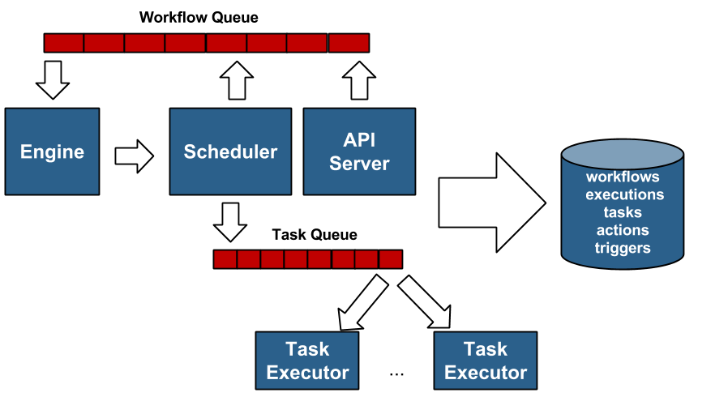

Mistral Architecture¶
Mistral is OpenStack workflow service. The main aim of the project is to provide capability to define, execute and manage tasks and workflows without writing code.
Basic concepts¶
A few basic concepts that one has to understand before going through the Mistral architecture are given below:
- Workflow - consists of tasks (at least one) describing what exact steps should be made during workflow execution.
- Task - an activity executed within the workflow definition.
- Action - work done when an exact task is triggered.
Mistral components¶
Mistral is composed of the following major components:
- API Server
- Engine
- Task Executors
- Scheduler
- Persistence
The following diagram illustrates the architecture of mistral:
API server¶
The API server exposes REST API to operate and monitor the workflow executions.
Engine¶
The Engine picks up the workflows from the workflow queue. It handles the control and dataflow of workflow executions. It also computes which tasks are ready and places them in a task queue. It passes the data from task to task, deals with condition transitions, etc.
Task Executors¶
The Task Executor executes task Actions. It picks up the tasks from the queue, run actions, and sends results back to the engine.
Scheduler¶
The scheduler stores and executes delayed calls. It is the important Mistral component since it interacts with engine and executors. It also triggers workflows on events (e.g., periodic cron event)
Persistence¶
The persistence stores workflow definitions, current execution states, and past execution results.